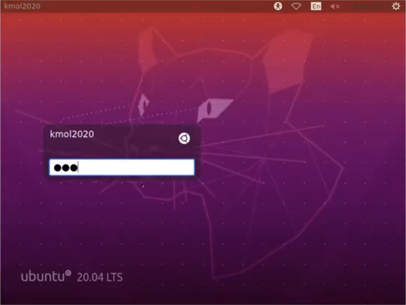
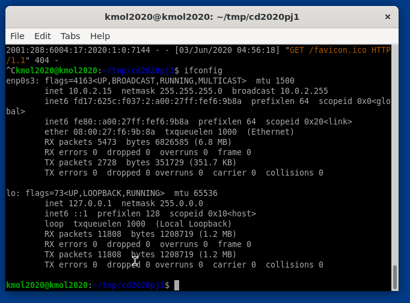
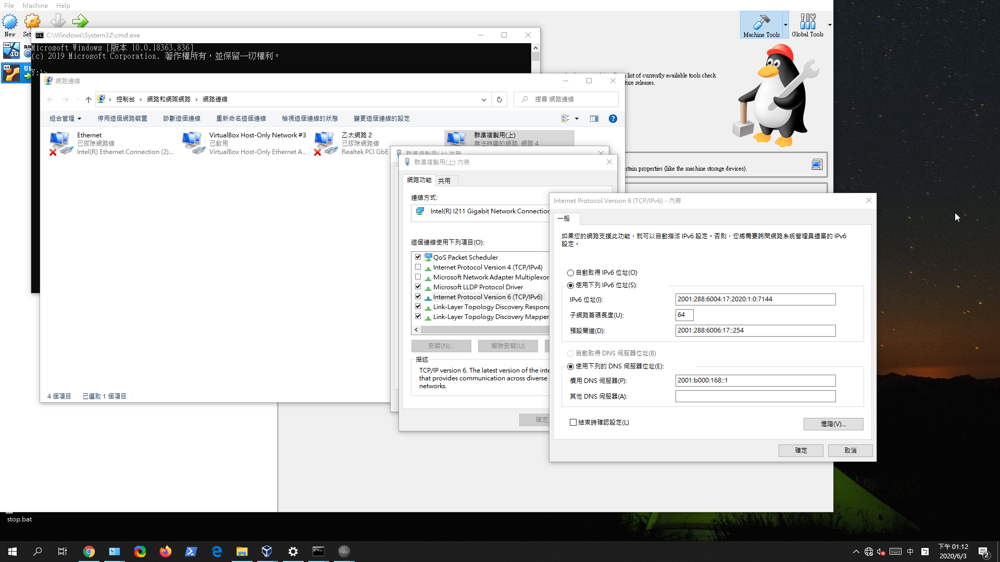
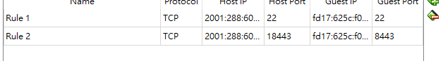

WEEK6-9 <<
Previous Next >> WEEK15-18
WEEK10-14
week10
1.登錄自己的Gmail，到https://console.developers.google.com/projectselector2/apis/dashboard?supportedpurview=project
2.建立專案，名字隨意
3.去老師的cd2020pj1，git clone到tmp下
4.啟用Google的API服務，選Google Domain API啟用
5.憑證-設定同意畫面
6.在API 的服務 ，點開憑證 建立 客戶端ID類型
7.把帳號密碼存到tmp底下
8.開啟leo，將cd2020pj1.leo拉進去，編輯自己設定的路徑和名稱
9.儲存後按darwROC ，再輸入 pip install authomatic
10.進入cd2020pj1，打開python wsgi.py即可
week10
coppeliasim:40723221
MSModelingAndTFApproaches.pdf. 207頁:7人
40723249
40623117
40723221
40723228
40723236
40723237
40723243
MechatronicDesignCases.pdf. 46頁:2人
40723222
40723244
topic3:
MechaFutureAndChallenges.pdf. 38頁:2人
40623252
40523253
MechaEducFutureNeed.pdf. 20頁:1人
40723240
開會影片:https://www.youtube.com/watch?v=jr4IxIwdHLk&feature=emb_title
week12
V-rep虛擬主機
1.先下載VirtualBoxrtualBox跟Ubuntu
2.將Ubuntu匯入
3.設定網路 Host-Only -Only 啟動Ubuntu主機
4.輸入密碼kmol2020登入，開啟LXTermial
5.輸入xterm&
6.用ls來顯示，在用cd進入資料夾內
7.輸入./coppeliaSim.sh來開啟Vrep
week13
IPv4 Ubuntu對外連線設定操作
1. 先開啟VirtualBox並用上次的cd2020pj1，喜好設定-->網路-->新增-->連接阜轉送
2. 主機IP打127.0.0.1，客體IP 10.0.2.15 主機連接阜分別為19999、22、17443、18443客體連接阜分別為19999、22、7443、8443
3.設定-->網路-->改成NAT網路
4.啟動虛擬主機
5.輸入密碼kmol2020，點選LXTerminal
6.輸入-->iconfig-->sudo apt net-tools -->輸入密碼kmol2020

7.打cd tmp -->ls -->輸入ping 127.0.0.1測試
8.進入cd2020pj1-->git pull-->sudo vi wsgi.py
9.把host的地方改成10.0.2.4 -->按ESC-->輸入wq儲存
10.開啟LEO-->打開cd2020pj1.leo-->點選NAV尋找allowExt
11.點fileuploadfrom，第10行新增一個ttt檔，完成後存儲並關閉leo
12.在tmp新增oauth_scrum.txt，打sudo vi oauth_scrum.txt
13.按i編輯，內容先都可以，接著按Esc並輸入:wq存儲
14.輸入python3 wsgi.py
15.帳號及密碼都為admin，點fileuploadform，選要上傳的ttt檔
16.點選download list檢查檔案是否上傳完成

week14
Bridged IPv6 遠端控制設定
1.設定IPV6內容
2.開啟喜好設定設定IPV6的參數
3.開啟虛擬主機輸入密碼
4.cd tmp ->cd cd2020pj1 ->git pull -> ls ->cd docs -> cd cmsimde -> vi wsgi.py
5.把host改成自己主機IP
6.把PUTTY改為自己要連線的IP
7.打開並輸入kmol2020
8.開起XLaunch
9.輸入xterm&
10.cd tmp ->cd cd2020pj1 ->git pull -> ls ->cd docs -> cd cmsimde -> vi wsgi.py 即可


week14